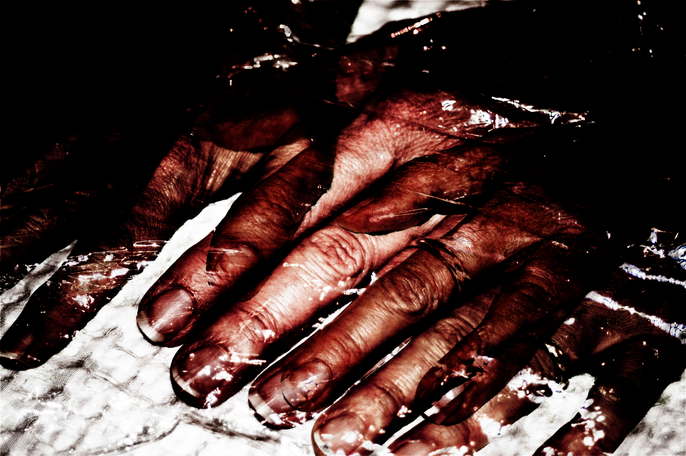
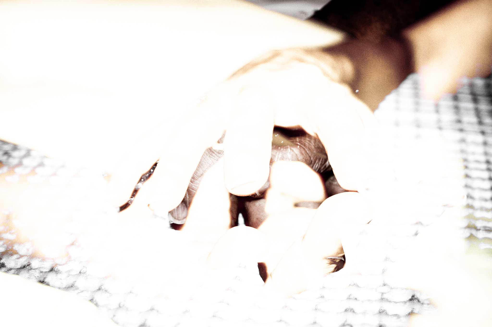
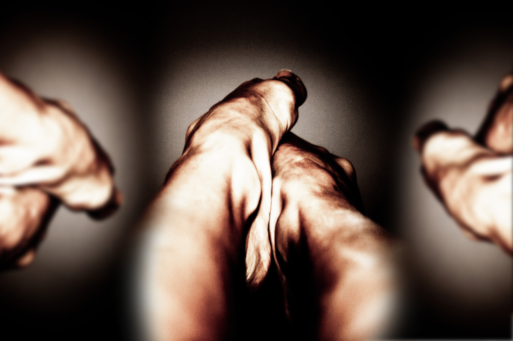

2021
I developed this project in my senior year of highschool, its aim was for us to explore photoshop, photography and photo editing putting our creativity to use.
I was asked to take a bunch of random pictures that needed to include a body part and then, to edit them as extreme and "crazy" as possible, in order to let go of all of our creative barriers and at the same time, learn how to use photoshop.
In the end, the first picture was my final product and the one used in the online gallery exposition with all of my class's final product.
The other pictures were also successful attempts but at the end, were not part of my final composition.
The final composition is composed by 3 pictures that, in my opinion relate to each other and were put together in a way that tell a story.
programms used




